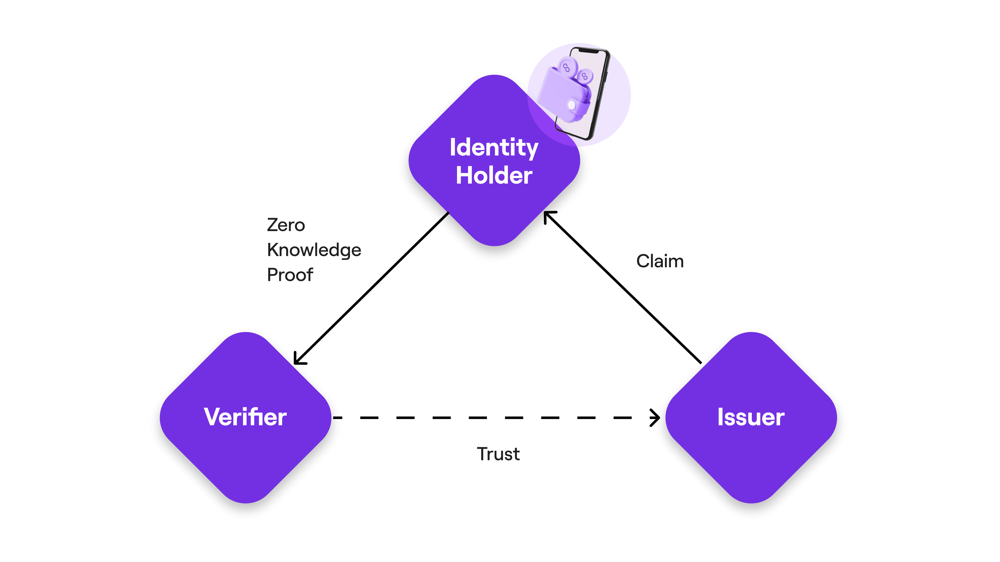

Polygon ID: An Introduction
Based on the principles of Self-Sovereign Identity (SSI) and cryptography, Polygon ID is a decentralised and permissionless identity framework for web2 and web3 applications. The SSI framework lets individuals own and control their identities.
Why Polygon ID?
Polygon ID, with the help of zero-knowledge proofs, lets users prove their identity without the need of exposing their private information. This ensures both the Freedom of Expression and Privacy by Default (User's identities are secured by zero-knowledge cryptography).
Core Concepts of Polygon ID: Claim, Identity Holder, Issuer and Verifier (Triangle of Trust)
Every identity-based information is represented via a Claim. In the simplest terms, a claim represents any type of information related to an individual/enterprise/object. The claim could be as simple as the age of the entity or the highest degree held by it. It could be a membership certificate issued by a DAO. Or anything that you can think of!
The architecture of the framework is composed of three modules: Identity Holder, Issuer, and Verifier. These three, together, form what we call the triangle of trust. Let us see what role each entity plays in Polygon ID.
-
Identity Holder: An entity that holds claims in its Wallet. A claim, as mentioned above, is issued by an Issuer to the Holder. The Identity Holder generates zero-knowledge proofs of the claims issued and presents these proofs to the Verifier, which verifies that the proof is authentic and matches specific criteria.
-
Issuer: An entity (person, organization, or thing) that issues claims to the Holders. Claims are cryptographically signed by the Issuer. Every claim comes from an Issuer.
-
Verifier: A Verifier verifies the proof presented by a Holder. It requests the Holder to send proof based on the claims they hold in their wallet. While verifying a proof, the Verifier performs a set of checks, for example that the claim was signed by the expected Issuer and that the Claim matches the criteria requested by the Verifier. The simplest examples of a Verifier is a Bar that wants to verify if you are over 18. In the real world, the Identity Holder would need to provide an ID and show all their personal information. With Polygon ID they only need to pass a proof.
A core concept here is the trust that must exist between a Verifier and an Issuer: the fact that the information contained inside a Claim are cryptographically verifiable doesn't guarantee its truth. The Issuer must be a trusted and reptuable party so that Verifier can consume the Claims originated by that Issuer.
The verification of a claim can happen either off-chain or on-chain!

Role of a Wallet
A Wallet plays a crucial role in the seamless exchange of claims and with the Issuer, on one hand, and proofs with the Verifier, on the other. As stated above, an Identity Holder carries his/her personal data, in the form of claim, within their wallet. At its core, the wallet stores the private key of a user, fetch claims from the Issuer, and create zero-knowledge proofs to be presented to the Verifier. Being the carrier of the sensitive information, Wallet has been designed to ensure that the identity of its Holder is protected and preserved, and no sensitive data can be revealed to the third party without the consent of the Holder.
What Can you Achieve Using Polygon ID?
-
Privacy using Zero-Knowledge Proofs: An Identity Holder, using zero-knowledge proofs, can keep his/her/its personal data private. During the process of claim verification, it just needs to show a proof that he is the owner of a claim that matches certain criteria without letting the Verifier know of the actual claim. For example, an Identity Holder can prove to a Verifier authority that s/he is above 18 years of age by presenting the proof that s/he is above 18 without revealing his/her actual age. This ensures minimum data exposure and hence ensures the safety of any sensitive data. Another aspect of privacy comes from the fact that the Issuer would not be able to track the usage of claims by an individual once it has been issued.
-
Off-Chain and On-Chain Verification: Verification of proofs can be done either off-chain or on-chain via Smart Contracts. For example, developers can set up a contract that airdrops tokens only to users that meet certain criteria based on their claims.
-
Self-Sovereignty: Polygon ID renders self-sovereignty in the hands of the user. The user is the only custodian of his/her private keys; user-controlled data can be shared with third parties without taking any permission from the Issuer that has issued the claims to the user.
-
Transitive Trust: A transitive trust between the actors of the triangle means that the trust between two entities in one domain or context can be easily extended to other domains or contexts. For instance, the information generated by an Issuer can be conveniently used by more than one Verifier without asking for permission. Along the similar lines, an Identity Hodler can built up his/her trust by collecting multiple credentials from different Issuers in one digital wallet.
Polygon ID and Iden3
Iden3 is the open-source protocol at the basis of Polygon ID. The protocol defines on a low-level how the parties listed above communicate and interact with each other. Polygon ID is an abstraction layer to enable developers to build applications leveraging the Iden3 protocol.
Further Resources On Polygon ID
- Identity Layer for Web3 - Paris - July 2022
- A Deep Dive Into Polygon ID - November 2022
- A Deeper Dive Into Polygon ID - November 2022